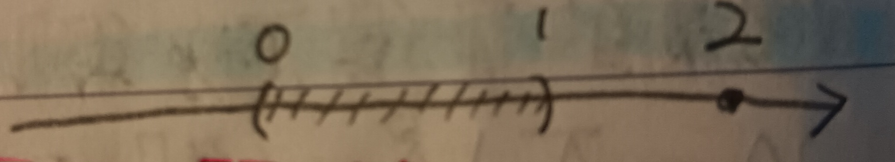

這份筆記是關於上下界與上下極限，及其在實數完備性上的應用。
最大下界與最小上界
定義 1：上界與下界 (Upper Bound and Lower Bound)
給定\(A\subseteq\mathbb{R}\)，若存在\(M\subseteq\mathbb{R}\)使得對於所有\(a\in A\)都有\(a\leq M\)，則稱\(M\)是\(A\)的上界。
類似的，可以定義\(A\)的下界。
定義 2：最小上界與最大下界 (Least Upper Bound and Greatest Lower Bound)
給定\(A\subseteq\mathbb{R}\)，若\(m\)是\(A\)的上界，且對於任何\(A\)的上界\(M\)都有\(m\leq
M\)，則稱\(m\)為\(A\)的最小上界，記為\(m=\sup A\)。
類似的，可以定義\(A\)的最大下界\(l\)，記做\(l=\inf
A\)。
例 2-1
考慮\(A=\left\{-\frac{1}{n}\right\}_{n=1}^\infty\)，則\(\sup A=0\)。
證明：首先，我們可以發現對於所有\(n\in\mathbb{N}\)有 \[ -\frac{1}{n}<0 \] 故\(0\)確是\(A\)的上界。接著，假設\(M\)也是\(A\)的上界但\(M<0\)，則\(-M>0\)。由阿基米德性質(這裡的性質22)知存在\(n\in\mathbb{N}\)使得 \[ 0<\frac{1}{n}<-M \] 故有\(M<-\frac{1}{n}\)。然而\(-\frac{1}{n}\in A\)，這與\(M\)是\(A\)的上界的假設矛盾。故\(0\)是最小上界 i.e. \(\sup A=0\)。QED
註記 2-2
對於集合\(A\subseteq\mathbb{R}\)，若對於所有\(M\in\mathbb{R}\)都有\(x\in A\)使得\(x>M\)。則記\(\sup A=+\infty\)。類似的，我們也會記\(\inf A=-\infty\)。
註記 3
給定集合\(A\subseteq\mathbb{R}\)，若\(\sup A=m\in\mathbb{R}\)，則對於所有\(\epsilon>0\)，有\((m-\epsilon,m]\cap A\neq\varnothing\)。
(這是顯然的。)
例 3-1
考慮\(A=(0,1)\cup\{2\}\)(見下圖1)，則\(\sup A=2\)。可以發現對於所有\(\epsilon>0\)，確實\((2-\epsilon,2]\cap A=\{2\}\)不是空集合。
從這裡也能看到註記3中\((m-\epsilon,m]\)的右邊取閉區間是必須的。在這裡如果右邊取開區間就會發生\((2-\epsilon,2)\cap A=\varnothing\)。
定義 4：上極限與下極限 (Limit Superior and Limit Inferior)
給定數列\(\{a_n\}_{n=1}^\infty\)，令 \[ \begin{aligned} A_n&=\sup\{a_j\}_{j=n}^\infty\\ B_n&=\inf\{a_j\}_{j=n}^\infty \end{aligned} \] 易知 \[ \begin{aligned} A_{n+1}=\sup\{a_j\}_{j=n+1}^\infty&\leq\sup\{a_j\}_{j=n}^\infty=A_n\\ B_{n+1}=\inf\{a_j\}_{j=n+1}^\infty&\geq\inf\{a_j\}_{j=n}^\infty=B_n \end{aligned} \] (在第一式中，\(\{a_j\}_{j=n}^\infty\)比\(\{a_j\}_{j=n+1}^\infty\)多了\(a_n\)，故若\(a_n\)比後面所有東西都大的話就會有\(A_{n+1}\leq A_n\)。第二式同理。)即\(A_n\)遞減，\(B_n\)遞增。則定義\(\{a_n\}\)的上極限為 \[ \limsup_{n\to\infty}a_n=\lim_{n\to\infty}A_n \] 並定義\(\{a_n\}\)的下極限為 \[ \liminf_{n\to\infty}a_n=\lim_{n\to\infty}B_n \]
性質 4-1
I. 若\(\limsup\limits_{n\to\infty}a_n=m\in\mathbb{R}\)，則存在\(\{a_n\}\)的子序列\(\{a_{n_j}\}_{j=1}^\infty\)使得\(\lim\limits_{j\to\infty}a_{n_j}=m\)。
II. 若\(\liminf\limits_{n\to\infty}a_n=l\in\mathbb{R}\)，則存在\(\{a_n\}\)的子序列\(\{a_{n_k}\}_{k=1}^\infty\)使得\(\lim\limits_{k\to\infty}a_{n_k}=l\)。
證明：這裡只證I.，而II.的證明同理。
\(\limsup\limits_{n\to\infty}a_n=m\)代表對於所有\(\epsilon>0\)都存在\(N_0\in\mathbb{N}\)使得對於所有\(n>N_0\)都有\(|A_n-m|<\epsilon\)。而由註記3知\(\sup\{a_j\}_{j=n}^\infty=A_n\)代表對於所有\(\delta>0\)都有\(n\leq j_\delta\in\mathbb{N}\)使得\(A_n-\delta<a_{j_\delta}\leq
A_n\)。今令\(\delta=\frac{1}{k}\), \(k\in\mathbb{N}\)，則考慮數列\(\{a_{j_{1/k}}\}_{k=1}^\infty\)，有 \[
\begin{aligned}
|a_{j_{1/k}}-m|&\leq|a_{j_{1/k}}-A_n|+|A_n-m|\\
&\leq\frac{1}{k}+\epsilon
\end{aligned}
\] 這可以任意小，故 \[
\lim_{k\to\infty}a_{j_{1/k}}=m
\] 即\(\{a_{j_{1/k}}\}_{k=1}^\infty\)是收斂到\(m\)的\(\{a_n\}\)的子序列。QED
性質 4-2
I. 若\(\limsup\limits_{n\to\infty}a_n=m\in\mathbb{R}\)，則\(m\)是\(\{a_n\}\)最大的密聚點。
II. 若\(\liminf\limits_{n\to\infty}a_n=l\in\mathbb{R}\)，則\(l\)是\(\{a_n\}\)最小的密聚點。
證明：這裡只證I.，而II.的證明同理。
由性質4-1可知\(m\)確為\(\{a_n\}\)的密聚點。若存在\(m'>m\)也是\(\{a_n\}\)的密聚點，則對於所有\(\epsilon>0\)，都存在\(\{a_n\}\)的子序列\(\{a_{n_j}\}\)使得 \[
\{a_{n_j}\}_{j=1}^\infty\subseteq B_\epsilon(m')
\] 令\(\epsilon=\frac{m'-m}{2}\)，則對於所有\(j\in\mathbb{N}\)都有\(a_{n_j}>m\)。而對於所有\(N\in\mathbb{N}\)，都有\(j\)使得\(n_j>N\)，故 \[
A_N=\sup\{a_n\}_{n=N}^\infty\geq a_{n_j}\geq m+\epsilon
\] 故 \[
m=\limsup_{n\to\infty}a_n=\lim_{n\to\infty}A_n\geq m+\epsilon>m
\] 矛盾，故\(m\)應是\(\{a_n\}\)最大的密聚點。QED
性質 4-3
若 \[ \begin{aligned} \limsup\limits_{n\to\infty}a_n&=m\in\mathbb{R}\\ \liminf\limits_{n\to\infty}a_n&=l\in\mathbb{R} \end{aligned} \] 且\(m=l\)，則 \[ \lim_{n\to\infty}a_n=l=m \]
證明：考慮數列\(\{A_n\}\)與\(\{B_n\}\)。可以發現對於所有\(n\in\mathbb{N}\)都有 \[ B_n\leq a_n\leq A_n \] 而\(\lim A_n=\lim B_n\)，故由夾擠引理(這裡的引理12)就有所欲證的了。QED
例 4-4
上下極限都不一定會好好的存在。考慮數列 \[ \{a_n\}=\{(-1)^nn\}=\{-1,2,-3,4,-5,6,\cdots\} \] 則 \[ \begin{aligned} A_n&=\sup\{(-1)^jj\}_{j=n}^\infty=+\infty\\ B_n&=\inf\{(-1)^jj\}_{j=n}^\infty=-\infty \end{aligned} \] 故 \[ \limsup_{n\to\infty}a_n=+\infty, \liminf_{n\to\infty}a_n=-\infty \]
定理 5
給定集合\(A\subseteq\mathbb{R}\)，若存在\(A\)有上界\(M\in\mathbb{R}\)，則\(A\)有最小上界。
證明：首先，若\(M\in A\)，則\(M\)就應該是\(A\)的最小上界(不然如果有\(m<M\)也是上界，則\(m<M\in
A\)，直接和上界的定義矛盾)。若\(M\notin
A\)，則對於所有\(x\in A\)有\(x<M\)。考慮一串區間\([M-1,M],[M-2,M-1],\cdots\)。由於\(M\)是\(A\)的上界，故 \[
A\cap\left(\bigcup_{j=0}^\infty[M-(j+1),M-j]\right)=A
\] 可以知道必有\(j\in\mathbb{N}\cup\{0\}\)使得\([M-(j+1),M-j]\cap
A\neq\varnothing\)。挑出這些\(j\)中最小的那個。令\(a_1=M-j\)，則\(M-(j+1)=a_1-1\)。於是有 \[
\left(\left[a_1-1,a_1-\frac{1}{2}\right]\cup\left[a_1-\frac{1}{2},a_1\right]\right)\cap
A\neq\varnothing
\] 我們接下來分成兩種狀況討論：
1. 若\(\left[a_1-\frac{1}{2},a_1\right]\cap
A\neq\varnothing\)，則令\(a_2=a_1\)。
2. 若\(\left[a_1-\frac{1}{2},a_1\right]\cap
A=\varnothing\)，則應有\(\left[a_1-1,a_1-\frac{1}{2}\right]\cap
A\neq\varnothing\)。此時令\(a_2=a_1-\frac{1}{2}\)，則 \[
\left[a_1-1,a_1-\frac{1}{2}\right]=\left[a_2-\frac{1}{2},a_2\right]
\] 無論如何，可以發現\(M,a_1,a_2\)都是\(A\)的上界，且\(a_2\leq a_1\leq
M\)。如此迴環往復，可以建構出一連串\(A\)的上界\(a_1,a_2,a_3,\cdots\)滿足 \[
a_1\geq a_2\geq a_3\geq\cdots\geq a_n\geq\cdots M-(j+1)
\] 且對於所有\(n\)都有 \[
\left[a_n-\left(\frac{1}{2}\right)^{n-1},a_n\right]\cap A=\varnothing
\] 即數列\(\{a_n\}\)單調遞減且有下界，由這裡的定理11可知\(\{a_n\}\)收斂。令 \[
\lim_{n\to\infty}a_n=c\in\mathbb{R}
\] 我們希望說明對於所有\(n\in\mathbb{N}\)都有\(c\in\left[a_n-\left(\frac{1}{2}\right)^{n-1},a_n\right]\)。若不然，則假設存在某個\(n\)使得\(c\notin\left[a_n-\left(\frac{1}{2}\right)^{n-1},a_n\right]\)。則由於
\[
\left[a_1-1,a_1\right]\supseteq\left[a_2-\frac{1}{2},a_2\right]\supseteq\left[a_3-\left(\frac{1}{2}\right)^2,a_3\right]\supseteq\cdots
\] 故對於所有\(m\geq
n\)都有\(c\notin\left[a_m-\left(\frac{1}{2}\right)^{m-1},a_m\right]\)，即有
\[
|a_m-c|\geq\left|a_n-\left(\frac{1}{2}\right)^{n-1}-c\right|>0
\] 這樣顯然無法讓\(\{a_n\}\)收斂到\(c\)，故對所有\(n\)都應有\(c\in\left[a_n-\left(\frac{1}{2}\right)^{n-1},a_n\right]\)。
接著，我們希望說明\(c\)是\(A\)的最小上界。若存在\(x\in A\)使得\(c<x\)，則應存在\(m\in\mathbb{N}\)使得 \[
\left(\frac{1}{2}\right)^m<x-c
\] 令\(n=m+4\)，則\(\left(\frac{1}{2}\right)^{n-1}<\left(\frac{1}{2}\right)^m\)且\(c\in\left[a_n-\left(\frac{1}{2}\right)^{n-1},a_n\right]\)。故有
\[
x\notin\left[a_n-\left(\frac{1}{2}\right)^{n-1},a_n\right]
\] 而因為\(a_n\)是\(A\)的上界，故 \[
x<a_n-\left(\frac{1}{2}\right)^{n-1}\leq c
\] 這與\(c<x\)的假設矛盾，故對於所有\(x\in A\)都應有\(x<c\) i.e. \(c\)是\(A\)的上界。接著，假設\(L\)是\(A\)的上界且\(L<c\)，則應存在\(m\in\mathbb{N}\)使得 \[
\left(\frac{1}{2}\right)^m<c-L
\] 令\(n=m+4\)，則\(\left(\frac{1}{2}\right)^{n-1}<\left(\frac{1}{2}\right)^m\)且\(c\in\left[a_n-\left(\frac{1}{2}\right)^{n-1},a_n\right]\)。故有
\[
L\notin\left[a_n-\left(\frac{1}{2}\right)^{n-1},a_n\right]
\] 而因為\(L<c\)，故\(L<a_n-\left(\frac{1}{2}\right)^{n-1}\)。但由於\(\left[a_n-\left(\frac{1}{2}\right)^{n-1},a_n\right]\cap
A\neq \varnothing\)，故應存在\(x\in
A\)使得\(x\in\left[a_n-\left(\frac{1}{2}\right)^{n-1},a_n\right]\)。這樣的\(x\)會使\(L<x\)，這與\(L\)是上界的假設矛盾，故\(c\)應為最小上界。QED
實數完備性的等價敘述
定理 6：實數完備性的等價敘述
以下四點敘述等價：
1. 任何\(\mathbb{R}\)中的柯西序列都在\(\mathbb{R}\)中收斂。
2. 任何\(\mathbb{R}\)中有上界的單調遞增序列都在\(\mathbb{R}\)中收斂。
3. 任何\(\mathbb{R}\)中的有界序列都有在\(\mathbb{R}\)中收斂的子序列。
4.
任何\(\mathbb{R}\)中的集合若有上界，則該集合有最小上界。
證明：我們分成底下五部分證明。
1.\(\Rightarrow\) 2.：這個我們在這裡的定理11證過了。
1.\(\Rightarrow\) 3.：這個我們在這裡的定理13證過了(嚴格上來說那裡的是1.&2.\(\Rightarrow\)
3.，但其實是差不多的意思，畢竟有1.\(\Rightarrow\) 2.)。
3.\(\Rightarrow\) 1.：假設所有\(\mathbb{R}\)中的有界序列都有收斂子序列\(\{x_n\}_{n=1}^\infty\)，則給定\(\mathbb{R}\)中的柯西序列。由定義知對於所有\(\epsilon>0\)，存在\(N_0\in\mathbb{N}\)使得對於所有\(m,n>N_0\)都有 \[
|x_m-x_n|<\epsilon
\] 我們希望說明\(\{x_n\}\)是有界序列。選定\(\epsilon=1\)，則存在\(N\in\mathbb{N}\)使得對於所有\(m,n>N\)有\(|x_n-x_m|<1\)。固定\(m=N\)，則對於所有\(n>N\)有 \[
|x_n|<|x_N|+1
\] 故可知\(\{x_n\}\)是有界序列。由假設可知存在收斂子序列\(\{x_{n_k}\}\)，令其收斂至\(x\in\mathbb{R}\)。
接著，任意給定\(\epsilon>0\)，由\(\{x_n\}\)是柯西序列知存在\(N_1\in\mathbb{N}\)使得對於所有\(m,n>N_1\)有 \[
|x_m-x_n|<\frac{\epsilon}{2}
\] 而由於\(\{x_{n_k}\}\)收斂至\(x\)，故存在\(K\in\mathbb{N}\)使得對於所有\(k>K\)有 \[
|x_{n_k}-x|<\frac{\epsilon}{2}
\] 選定夠大的\(k>K\)使得\(n_k>N_1\)，則 \[
|x_n-x|\leq|x_n-x_{n_k}|+|x_{n_k}-x|<\frac{\epsilon}{2}+\frac{\epsilon}{2}=\epsilon
\] 故可知\(\{x_n\}\)收斂至\(x\)。
2.\(\Rightarrow\) 4.：這個我們在定理5證明過了。
4.\(\Rightarrow\) 2.：給定數列\(\{a_n\}_{n=1}^\infty\)，其中 \[
a_1\leq a_2\leq a_3\leq\cdots\leq M
\] 由假設知\(\{a_n\}\)有最小上界，令\(m=\sup\{a_n\}_{n=1}^\infty\)，我們希望說明\(\lim\limits_{n\to\infty}a_n=m\)。我們知道對於所有\(n\in\mathbb{N}\)有\(m\geq a_n\)，且由註記3知對於所有\(\epsilon>0\)應有 \[
(m-\epsilon,m]\cap\{a_n\}_{n=1}^\infty\neq\varnothing
\] 挑選\(a_{n_\epsilon}\in(m-\epsilon,m]\)。由於\(\{a_n\}\)是單調遞增序列，，故對於所有\(n\geq n_\epsilon\)，有 \[
m-\epsilon<a_{n_\epsilon}\leq a_n\leq m
\] 即對於所有\(n\geq
n_\epsilon\)有\(|a_n-m|<\epsilon\)。且由於\(\epsilon\)是任意給定的，故有 \[
\lim_{n\to\infty}a_n=m
\] 即\(\{a_n\}\)收斂。QED